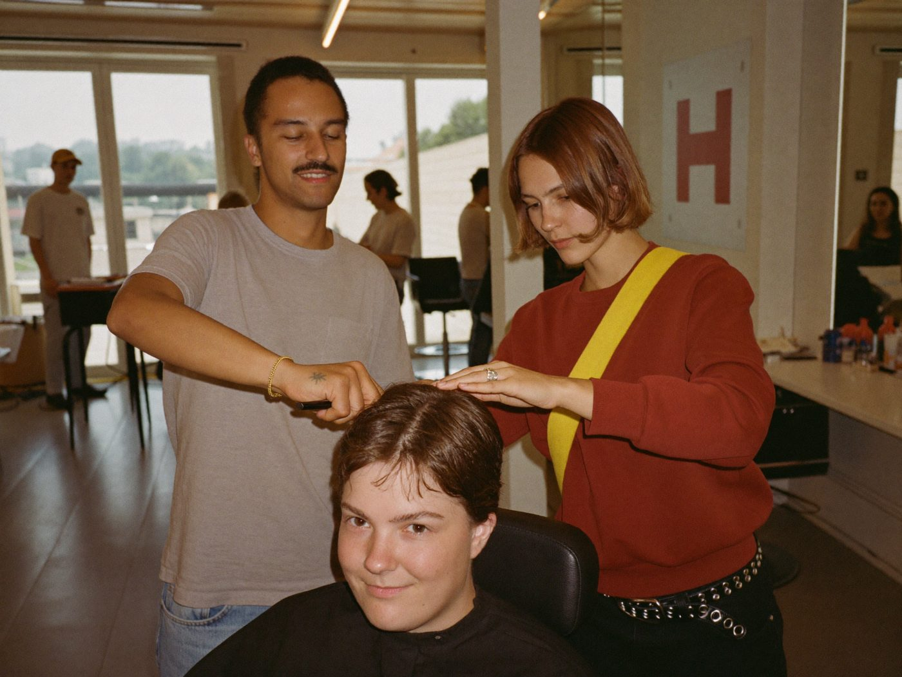
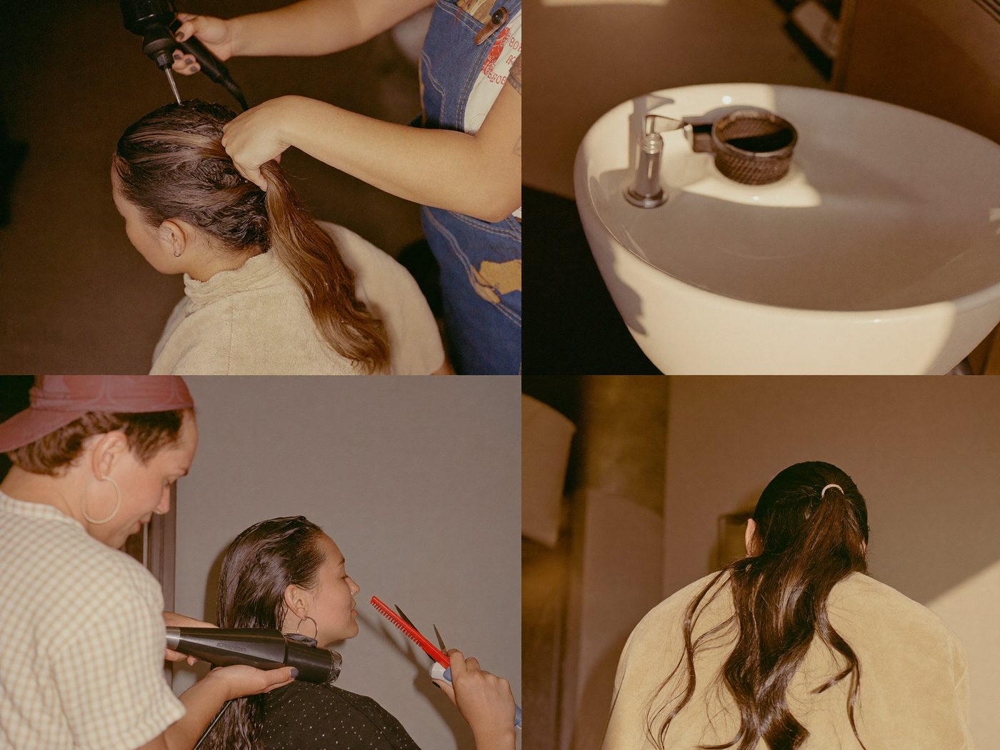
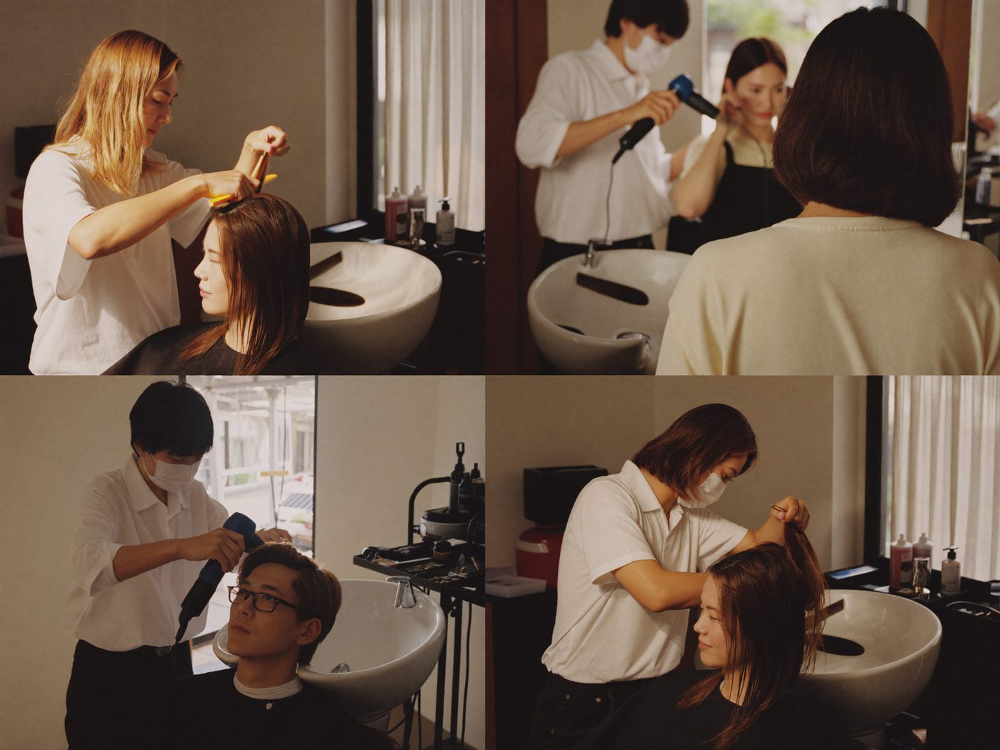
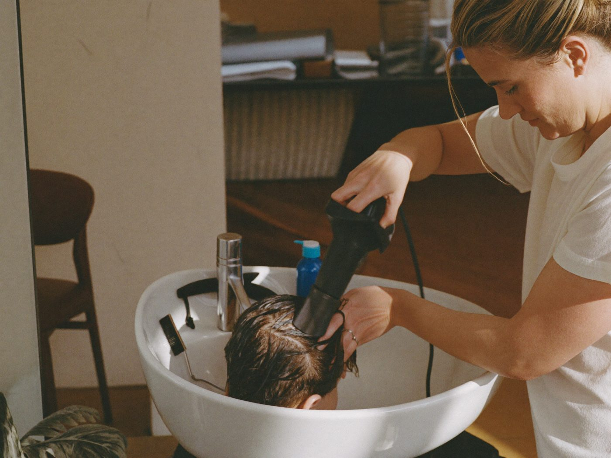
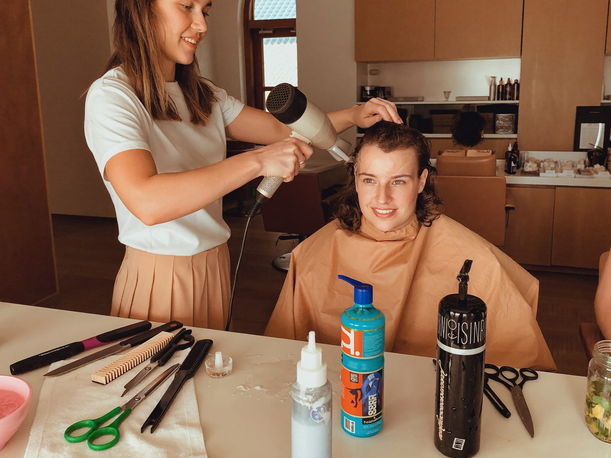

Your training. Your path to success.
Hairdressing is one of 340 recognised apprenticeship trades in Germany. Training follows the dual system and takes 3 years — with good performance you can shorten it by up to one year.
Your training is varied: alongside cutting, colouring and hairstyling, you learn how to work professionally with clients, master the most important make-up techniques and gain deeper insight into nail cosmetics.

What you should bring along
You don’t need a specific school-leaving certificate to train as a hairdresser — though a good one is always welcome.
How do I apply?
- 01Find out about a salon of your choice
- 02Apply in writing and in person
- 03If you make a good impression, you will be invited to an interview
What qualification will I get?
Training ends with the journeyman examination. Once you pass, you receive your journeyman certificate and are fully qualified.
From then on, many doors are open: continue with further training — or take your master craftsman examination.
VIEW CAREER PATHS


